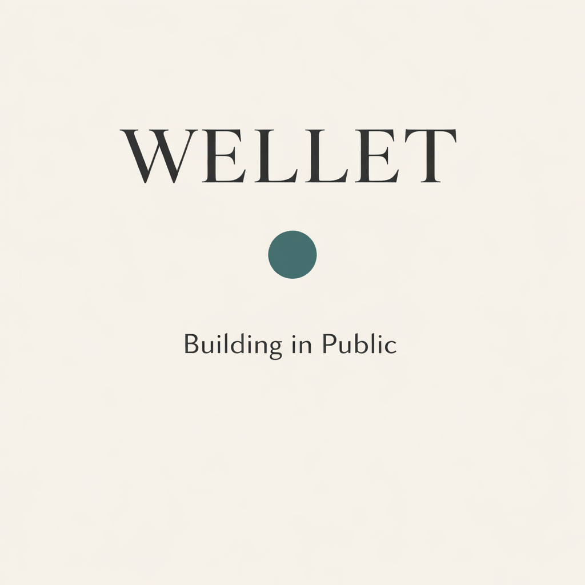

The first day of the Billion Dollar Build. Why Wellet exists, what got built in 12 hours, and the decisions behind privacy-first architecture, the Fogg behavior model for AI voice, and a 30-second animated brand film made entirely in CSS. Auth screen redesign, PDF export, document viewer, responsive layout — and a promise: no shame in this app. Ever.